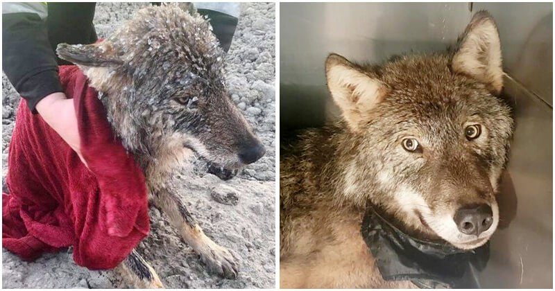

Workers Saved “Dog” From Freezing River, Only To Found Out It Wasn’t A Dog At All

Life is full of surprises and you’ll never know what will happen in the next minute. Even when you think you’re ready for all the possibilities, there’re still so many things you just can’t imagine. For example, a wolf inside your vehicle.
It started as a perfectly normal day for three Estonian dam workers Rando Kartsepp, Robin Sillamäe, and Erki Väli, until something in the nearly-frozen Pärnu River caught their eye. It was a dog, struggling helplessly in the icy water.
The kind-hearted men rapidly rushed to the river without a second thought to save the miserable animal. They quickly took him out of the river and wrapped him in a thick blanket. It was not until then that they had the chance to see him more clearly. He was a big dog with piercing yellow eyes, a nice-looking dog! Apparently it was the thick fur that helped him endure so long in the freezing water.
postimees
However, the dog was shivering and in poor condition. He had survived the drowning, but he wasn’t completely off the hook yet. His temperature dropped too low and he was facing the risk of hypothermia. Knowing the animal still needed help, the merciful men dropped their work again to take him to a veterinary clinic for more proper care.
After putting the trembling dog in their pickup truck, the workers called the local animal hospital and were instructed to bring the dog there as soon as possible. During that time, the canine fell asleep along the way, he even rested his head on Kartepp’s lap and closed his eyes to recharge his battery.
postimees
As soon as they got to the hospital, the vets were there. That’s when the problem arose. And no, the problem wasn’t his health, it was his identity.
The vets couldn’t identify the breed of the dog, so they decided to call a local hunter to ask if he could help them do the job. The experienced hunter knew exactly what he was dealing with. It turned out the survivor actually wasn’t a domestic dog, it was a wolf!
postimees
All of the workers and the vets were surprised by the hunter’s confirmation. To tell the truth, they all knew the dog was exceptional because of its strange appearance, but none of them suspected it was a wolf. Especially the workers, as they already kept the wolf in their vehicle without any leash! The wild wolf could easily hurt them if he wanted, or even worse.
Thankfully, the wolf was truly docile. Maybe he was just too weak to do so, or maybe he was aware of the fact that these men had saved his life. But the calmness obviously won’t last long.
postimeespostimees
Yes, the wolf was just waiting to find a good chance to reveal his true personality. After the one-year-old animal managed to regain his strength, it began to behave like any normal wolf would do, so the vets had to put him in a cage for the safety of everyone, including the wolf himself.
postimeespostimees
Finally, when the wolf fully recovered, they decided to let him come back to the wild – where he belonged. To ensure that the wolf would stay safe for a long time, the Estonian National Environmental Agency even equipped him with a GPS collar to trace his location.
postimeespostimees
The moment the wolf was released from his cage, he ran with lightning speed and disappeared into the white field! Kartsepp and the others gave him one last goodbye, ending their unforgettable story.
postimeespostimeesUpdated:A month after being rescued, the wolf was spotted again in perfect shape in the wild, just over 70 miles from where he was released. It seemed like this handsome guy was doing very well. Good luck, boy!
postimees
 The kind-hearted men rapidly rushed to the river without a second thought to save the miserable animal. They quickly took him out of the river and wrapped him in a thick blanket. It was not until then that they had the chance to see him more clearly. He was a big dog with piercing yellow eyes, a nice-looking dog! Apparently it was the thick fur that helped him endure so long in the freezing water.
The kind-hearted men rapidly rushed to the river without a second thought to save the miserable animal. They quickly took him out of the river and wrapped him in a thick blanket. It was not until then that they had the chance to see him more clearly. He was a big dog with piercing yellow eyes, a nice-looking dog! Apparently it was the thick fur that helped him endure so long in the freezing water.